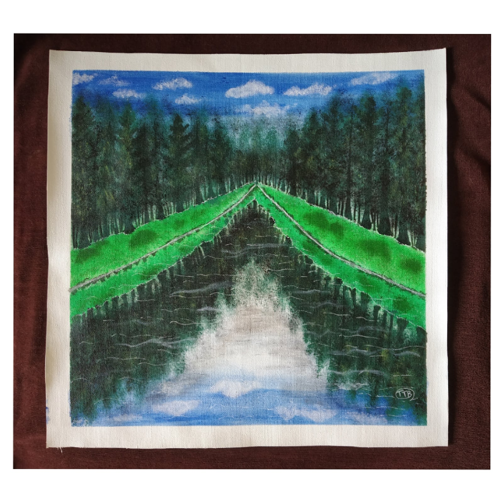

CLEAR REFLECTION LANDSCAPE
In frame is a simple lanscape painting of nature. it is a very normal painting with not much of things happening in background.
the main aim of this painting was to
show the reflection of the things on surface clearly reflecting in water and to give a realistic look to the reflection part.
The reflection of the sky in water is giving a very real effect in the painting with the reflection of trees.
Materials Required :
1 Canvas (16*16) inch.
paint brush.
Light and dark green, light blue, white acrylic colours.
steps one can follow(if needed) :
First take a plain canvas and tape it if you want a border or give wash to the whole canvas with light blue on< the top and
bottom part of canvas leavinhg the middle portion white.
After that first paint the grass portion in double sides and mark the middle portion with little white paint showing the
refletion and then paint the trees in double sides as it is a clear reflection painting.
After that dab the sky portion with little white and then follow the same foe water and let it dry.
After all this dries up , with little bit of white give some wavy strokes in the bottom portion to show the flow of water.
Let the painting dry well before framing.